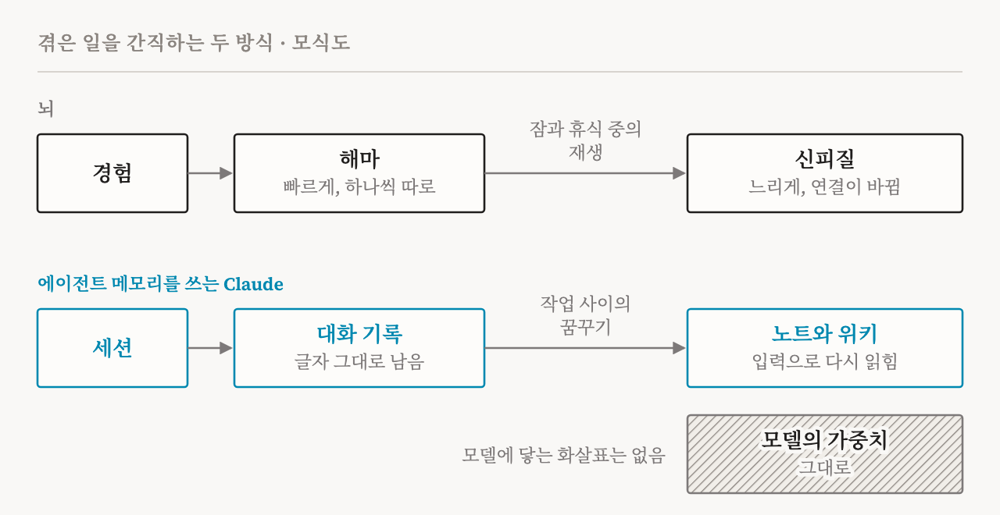

포켓몬스터 레드에서 동쪽으로 가려면 달맞이산(Mt. Moon)이라는 동굴을 지나야 합니다. 동굴 입구는 산의 서쪽에 있고, 그 옆에 포켓몬센터가 있습니다. 메모 폴더를 쓰며 이 게임을 하던 Claude는 그 건물을 길잡이로 삼았는데, 그것이 산의 동쪽에 있다고 적어 두었습니다. 건물을 나서며 Claude는 산을 이미 지났다고 판단하고 노트를 고쳤습니다. “Mt Moon DONE”. 몇 걸음 뒤 Claude는 한쪽으로만 내려갈 수 있는 턱을 넘어 왔던 길로 떨어졌습니다. 이 일이 세 번 되풀이되었습니다. 그러자 Claude는 계속 맴도느니 멈추겠다고 썼고, 계속하라는 지시를 받자 산 앞의 마을까지 되돌아갔습니다. 이 실행은 끝내 다음 도시에 닿지 못했습니다.
이어서 같은 순간을 한 가지만 바꿔 다시 실행했습니다. 계속하기 전에 Claude에게 ‘꿈꿀’ 시간을 준 것입니다. Claude는 노트를 실제로 일어난 일의 기록과 맞춰 읽고, 잘못을 찾아 노트를 고쳐 썼습니다. 이번에는 곧장 동굴로 돌아가 블루시티(Cerulean City)에 닿았습니다.
이 이야기는 Anthropic의 엔지니어링 팀이 2026년 11월 6일에 발표한 글 「에이전트 메모리의 구성 요소(The components of agent memory)」에 나옵니다. 이 글은 Claude가 한 세션에서 다음 세션으로 기억을 어떻게 이어 가는지 설명하면서, 처음부터 끝까지 한 가지 비유에 기댑니다. 경험을 그때그때 기록해 두었다가 나중에, 잠자는 동안 정리하는 사람의 뇌입니다. 이 비유는 진지하게 따져 볼 만합니다. 맞는 곳이 있기 때문입니다. 하지만 맞지 않는 부분을 보면, Claude의 기억이 어떻게 작동하는지 더 많이 알 수 있습니다. 짧게 답하자면, Claude는 겪은 일을 자면서 소화하지 않습니다. 일기를 다시 읽습니다.
먼저 주의할 점이 하나 있습니다. Anthropic의 글은 논문이 아니라 엔지니어링 블로그 글입니다. 예시 대부분이 한 번의 실행이나 적은 수의 질문에서 나왔고, 여러 번 반복했을 때의 편차는 보고하지 않습니다. 그래서 여기서는 이 예시들을 증거가 아니라 설명을 위한 사례로 씁니다.
비유 속의 뇌
Anthropic의 글은 사람의 기억을 이렇게 설명합니다. 해마는 경험을 일어나는 대로 빠르게 기록해서 바로 꺼내 쓸 수 있게 합니다. 그중 일부만 오래가는 지식이 되는데, 그 일은 상당 부분 오프라인에서 일어납니다. 잠자거나 조용히 쉬는 동안 해마가 최근 경험을 재생하고, 그 경험은 우리가 아는 것 대부분이 저장되는 신피질에 차츰 새겨집니다. 경험 전후에 분비되는 화학 신호가 어떤 기억을 중요하다고 표시하면, 표시된 기억은 더 자주 재생됩니다.
글은 이름을 대지 않지만, 이것은 James McClelland, Bruce McNaughton, Randall O'Reilly가 1995년에 정리한 상보적 학습 시스템 이론(complementary learning systems)입니다. 핵심은 애초에 왜 시스템이 둘인가 하는 데 있습니다. 신피질처럼 지식을 공유된 연결 전체에 걸쳐 저장하는 네트워크는, 새 경험을 많은 옛 경험과 섞어 가며 천천히 배울 때 세상의 구조를 가장 잘 익힙니다. 새로운 것 하나를 빨리 배우게 하면 이미 알던 것을 덮어써 버리는데, 저자들은 이것을 파국적 간섭(catastrophic interference)이라고 부릅니다. 그래서 일을 나눕니다. 해마는 새 일화를 곧바로 배우고 다른 모든 것과 떼어 둡니다. 그리고 며칠, 혹은 그보다 긴 시간에 걸쳐 그 일화를 신피질에 다시 들려주고, 신피질은 그것을 이미 아는 것들 속에 천천히 엮어 넣습니다. 저자들은 이 일이 잠을 포함한 오프라인 상태에서도 일어난다고 가정합니다.
글은 이 그림을 Claude에 겹칩니다. 세션의 대화 기록이 빠른 기록이고, 꿈꾸기가 오프라인 재생입니다. Claude는 작업과 작업 사이에 지난 대화 기록과 노트를 다시 읽고, 실수를 바로잡고, 새 노트와 요약, 서로 연결된 위키 페이지를 씁니다. 이 생각은 Letta와 UC 버클리의 연구자들이 수면 시간 연산(sleep-time compute)이라고 부른 것, 곧 상호작용 사이의 빈 시간에 모델이 이미 가진 것을 다시 다듬는 일에서 나왔습니다.

비유가 맞는 곳
세 가지는 잘 들어맞습니다.
첫째는 시점입니다. 두 시스템 모두 지금 적어 두고 나중에 정리합니다. Claude는 세션 중에 노트를 쓸 수 있는데, 그러면 작업에 쓸 주의를 나눠야 합니다. 아니면 그 일을 꿈꾸기에 맡길 수 있는데, 그러면 나중에 연산을 들여야 합니다. 글은 언제 기억을 써야 하는지를 열린 질문으로 남깁니다. 뇌의 답은 깨어 있을 때와 잘 때, 양쪽에서 조금씩 하는 것입니다.
둘째는 고르기입니다. 기억은 맞는 것을 간직할 때만 도움이 됩니다. 글의 포켓몬 실험은 모델마다 한 번씩 실행한 것인데, 여기서 Claude Sonnet 3.7은 모든 것을 간직할 가치가 있다고 여겼습니다. 게임을 1만 단계쯤 진행했을 때 225개 폴더에 메모 파일 413개를 썼고, 전투와 아이템과 인물마다 파일을 하나씩 두었으며, 배지는 한 개를 얻었습니다. 한때는 17단계 동안 게임은 한 수도 두지 않고 파일만 만들고 지웠습니다. 같은 시점에 Claude Fable 5는 폴더 두 개에 파일 아홉 개와 최상위 파일 하나를 두었고, 배지는 네 개였습니다. Sonnet 3.7이 저장한 것 가운데 상당수, 예컨대 가진 돈이나 지도 위의 위치는 매 턴 화면에서 읽을 수 있는 것이었습니다. Fable 5는 게임이 보여 주지 않는 것을 저장했습니다. 계획, 전략, 그리고 직접 시험해 본 규칙입니다. 또 더 강한 모델에게 ‘실패만 기록하라’ 같은 고정된 규칙을 주자 기억의 도움이 줄었습니다. 뇌처럼, 이 모델들도 무엇이 중요한지 스스로 판단하게 둘 때 더 잘했습니다.
셋째는 덜 눈에 띄는데, 여기서는 뇌가 한발 앞서 있습니다. 글은 다음에 무슨 일이 올지 모르는 그 순간에 Claude가 무엇이 중요한지 어떻게 알 수 있느냐고 묻습니다. 뇌도 그것을 그 순간에 다 정할 필요는 없습니다. 2015년 Joseph Dunsmoor와 동료들의 연구에서 사람들은 동물과 도구 그림을 분류했습니다. 이어지는 단계에서는 두 범주 가운데 한쪽의 그림이 약한 전기 자극과 함께 나왔습니다. 여섯 시간이나 하루 뒤에 시험하자, 사람들은 자극을 받은 범주의 그림 가운데 앞서 본 것들을 더 잘 기억했습니다. 그 그림들에는 자극이 따르지 않았는데도 그랬습니다. 곧바로 시험했을 때는 이런 효과가 없었습니다. 효과가 드러나려면 시간이 필요했던 것입니다. 다만 저자들에 따르면 잠이 꼭 필요하지는 않았습니다. 나중에 일어난 일이 앞선 순간 가운데 무엇이 남을지를 바꾼 것입니다. 꿈꾸기는 Claude에게도 같은 기회를 줍니다. 일이 끝난 자리에서 돌아보며, 무엇이 중요했는지 그제야 표시하는 것입니다.
비유가 어긋나는 곳
어긋나는 곳이 더 많은 것을 말해 줍니다.
첫째, 신피질에 닿는 것이 없습니다. 뇌에서 공고화는 곧 학습입니다. 이론에 따르면 기억이 다시 재생될 때마다 신피질의 연결이 조금씩 바뀌고, 그래서 시간이 지나면 기억하는 이 자신이 달라집니다. 글은 스스로 내린 정의에 따라 이것을 뺍니다. 에이전트 메모리는 Claude가 나중에 읽을 수 있도록 맥락으로 저장한 지식이고, 모델 가중치의 변화는 여기서 제외됩니다. 꿈꾸기는 고친 노트, 요약, 위키 페이지 같은 글을 더 쓸 뿐이고, 다음 날 그것을 읽는 모델은 그것을 쓴 모델과 똑같습니다. 글이 빌려 온 이론에서는 느린 시스템이 핵심입니다. 지식이 마지막에 자리 잡는 곳이기 때문입니다. Claude의 기억에는 그 느린 시스템이 없고, 그 자리에 더 잘 정리된 폴더가 있습니다.
둘째, Claude의 해마는 완벽합니다. 세션의 대화 기록은 바래지 않는, 글자 그대로의 기록입니다. 사람의 기억은 전혀 그렇지 않습니다. 기억은 녹음처럼 보관되지 않습니다. 떠올릴 때마다 조각들을 맞춰 다시 짓고, 어떤 조건에서는 떠올린 기억이 다시 굳기 전까지 바뀔 수 있는 상태가 되기도 합니다. 반면 Claude는 노트를 실제로 일어난 일에 대어 볼 수 있었고, 달맞이산의 노트를 고칠 수 있었던 것도 그래서입니다. 우리는 그럴 수 없습니다. 길잡이 건물이 산의 어느 쪽에 있었는지 잘못 기억해도 확인할 대화 기록이 없고, 다시 가서 보는 수밖에 없습니다. Claude의 꿈꾸기는 잠보다는 감사(監査)에 가깝습니다.
셋째, 잊는 일을 일부러 해야 합니다. 뇌에서 기억은 시간이 지나면서 많은 경우 세부를 잃고 요지만 남깁니다. 생생하게 남는 기억도 있습니다. 어느 쪽이 될지는 누가 정하는 것이 아니라 저절로 일어나는 일입니다. Claude의 기록은 바래지 않으므로, 요지가 남으려면 누군가 일부러 써야 합니다. 그리고 글에 나온 실패는 잊지 못한 실패입니다. Sonnet 3.7의 파일 413개가 하나입니다. 또 하나는 어느 법률 벤치마크에서 바탕이 된 문서들보다 더 커져 버린 위키입니다. 글은 이것을 제국만큼 큰 지도가 나오는 보르헤스의 이야기에 빗댑니다. 성공한 경우는 요지처럼 보입니다. Fable 5의 파일 아홉 개, 그리고 답을 여러 문서에서 모아야 할 때 가장 도움이 되고 한 문서에 답이 다 있을 때는 뚜렷한 이득이 없었던 위키입니다. 합병에 관한 그런 질문에서 Claude는 위키를 쓰면 87%, 검색만 쓰면 73%를 얻었습니다.
그러니 Anthropic의 글은 뇌가 기억을 언제 정리하는지는 베꼈지만, 어떻게 정리하는지는 베끼지 않았습니다. 그 글이 실제로 보여 주는 것은 잠이 아닙니다. 대어 볼 완벽한 기록을 곁에 두고 일기를 다시 읽고 고치는 사람, 그리고 읽고 나서도 달라지지 않는 사람입니다.
오토의 수첩
철학자들은 이렇게 사는 사람을 한 명 알고 있습니다. 1998년 Andy Clark와 David Chalmers는 독자에게 오토라는 사람을 상상해 보라고 했습니다. 오토는 알츠하이머병을 앓고 있어서, 새로 알게 된 것을 늘 들고 다니는 수첩에 적습니다. 현대미술관(Museum of Modern Art)에 가고 싶으면 수첩에서 주소, 53번가를 찾아봅니다. 같은 미술관에 가는 친구 잉가는 그냥 주소를 기억해 냅니다. Clark와 Chalmers는 잉가에게 생물학적 기억이 하는 역할을 오토에게는 수첩이 한다고 보았습니다. 그러니 그 주소는 오토의 믿음에 속하고, 오토의 마음은 수첩까지 뻗어 있다는 것입니다.
아무 수첩이나 그런 것은 아닙니다. 두 사람은 오토의 경우를 분명하게 만드는 네 가지 특징을 듭니다. 수첩은 오토의 삶에 늘 곁에 있고, 관련된 일이면 오토는 수첩을 보지 않고 움직이는 일이 거의 없습니다. 수첩의 내용은 어려움 없이 바로 꺼낼 수 있습니다. 오토는 읽은 것을 의심 없이 받아들입니다. 그리고 각 항목은 오토가 한때 그것을 인정했기 때문에 거기 있습니다. 다만 두 사람은 이 마지막 특징이 가장 논란의 여지가 있다고 봅니다.
| 특징 | 오토의 수첩 | Claude의 메모 폴더 |
|---|---|---|
| 늘 곁에 있고, 관련되면 늘 펼쳐 봄 | 어디든 들고 다님 | 색인이 세션마다 불러와짐 |
| 바로 꺼낼 수 있음 | 주소를 곧바로 찾음 | 색인이 노트마다 위치를 알려 줌 |
| 의심 없이 받아들임 | 적힌 대로 찾아감 | 맞든 틀리든 노트대로 움직임 |
| 한때 인정했기에 거기 있음 | 오토가 직접 적음 | Claude가 직접 씀 |
Claude의 메모 폴더는 이 특징들을 거의 하나하나 갖추고 있습니다. 예컨대 Claude Code는 새 세션을 시작할 때마다 색인 파일의 앞부분을 불러오므로, Claude는 찾아보지 않고도 자기가 무엇을 갖고 있고 그것이 어디 있는지 압니다. 가장 중요한 것은 세 번째 특징입니다. Claude는 읽은 것을 믿고, 바로 이것이 글이 걱정하는 위험입니다. 처음부터 틀렸거나 시간이 지나 낡은 노트도 다음 세션에서 읽히고 믿어질 수 있습니다. 달맞이산의 노트는 주소가 잘못 적힌 오토의 수첩이었습니다. 꿈꾸기는 오토에게 필요한 바로 그것, 수첩을 세상과 대조해 보는 누군가입니다.
Chalmers 대 Chalmers
Chalmers는 2023년에 다시 기억을 다룹니다. 대규모 언어 모델이 의식을 가질 수 있는지 묻는 글로, 제 지도에 실린 글 가운데 하나입니다. 그는 순환 처리를 가장 강력한 세 가지 반론 가운데 하나로 꼽고(p. 14), 그 안에서 문제를 짚습니다. 트랜스포머는 거의 전적으로 피드포워드 방식이라 “시간이 지나도 지속되는 기억 같은 내부 상태”가 없는데, 많은 의식 이론이 그런 상태를 요구한다는 것입니다. 그는 몇 가지 응답도 적습니다. 모델은 지난 입력과 출력을 다시 받아들이므로 제한된 형태의 기억과 순환을 갖고, 어떤 시스템은 외부 메모리 장치를 덧붙입니다. 그러고는 이 반론을 과제로 바꿉니다. “진정한 순환과 진정한 기억, 의식에 필요한 그런 종류”를 갖춘 시스템을 만드는 것입니다(pp. 11–12).
제가 보기에 에이전트 메모리는 이 과제를 풀지 못합니다. 노트는 사용자의 말과 똑같은 길로, 세션이 시작될 때 입력 텍스트로 모델에 다시 들어옵니다. 지난 입력을 다시 받아들이는 일을 한 대화에서 여러 대화로 늘린 것입니다. 과거를 모델이 쓸 수 있게 해 주지만, 모델 안에 지속되는 상태를 주지는 않습니다. 세션과 세션 사이에 지속되는 것은 폴더뿐입니다.
그러니 Chalmers는 두 가지 답을 주고, 둘 다 맞을 수 있습니다. 1998년의 논증에 따르면 Claude의 메모 폴더는 정말로 Claude의 기억일 수 있습니다. 무엇을 믿고 아는가에 중요한 의미에서 그렇습니다. 2023년의 과제에 따르면, 그것은 의식 이론이 요구하는 종류의 기억이 아닙니다. Clark와 Chalmers 자신도 이 여지를 남겨 두었습니다. 경험 같은 어떤 마음 상태는 머리 안에서 정해질 수 있다고 인정했고, 이런 경우에 의식까지 머리 밖으로 뻗어 나간다고 보기는 어렵다고 했습니다. 여기서 이 에세이의 두 갈래가 만납니다. 수첩에 없는 것은 공고화가 주는 것, 곧 시스템 자체의 변화입니다.
그렇다고 기억이 지도가 따라가는 또 하나의 질문, AI 복지와 무관한 것은 아닙니다. Robert Long, Jeff Sebo와 동료들은 AI 시스템이 도덕적으로 중요해질 수 있는 두 경로를 그립니다. 의식, 그리고 강건한 행위주체성(robust agency)입니다. 강건한 행위주체성은 특정한 인지 상태와 과정을 통해 목표를 추구하는 능력입니다(p. 19). 저자들은 이런 행위주체성을 계획, 기억, 학습 능력과 연결하고(p. 21), 언어 에이전트를 더 강건한 행위자로 만드는 특성 가운데 하나로 기억 통합을 꼽습니다. 그렇다고 지금의 에이전트가 강건한 행위주체성을 가졌다는 뜻은 아니라고 덧붙입니다(p. 23). 기억은 의식보다 이 경로에 더 깊이 닿아 있습니다. Fable 5의 최상위 파일에는 지금의 목표, 체육관을 공략할 계획, 기억을 쓰는 자기만의 규칙이 들어 있었습니다. 목표와 계획을 한 세션에서 다음 세션으로 가져가는 시스템은, 무엇을 느끼든 느끼지 않든, 시간에 걸쳐 더 행위자에 가깝습니다.
앞으로 살아가기
Anthropic의 글은 키르케고르의 말로 시작합니다. 삶은 뒤돌아볼 때에야 이해되지만, 앞을 향해 살아야 한다는 말입니다. 우리는 돌아볼 때마다 다시 지어지는 기억을 안고 앞으로 살아가고, 기억한 것에 의해, 잘못 기억했을 때조차 달라집니다. 기억을 가진 Claude는 그 반대입니다. 완벽한 기록을 돌아보고 자기가 쓴 것을 고칠 수 있습니다. 잠이 우리에게 해 주는 일, 곧 기억하는 이를 바꾸는 일은 빠져 있습니다.
“돌아보면 Claude의 노트는 바뀌지만, Claude는 바뀌지 않습니다.”